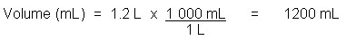
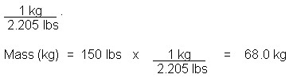

Unit 3: Quantities in Chemical Reactions
Activity 1: Chemistry in Science, Technology, Society and the Environment
Content
Unit Conversions
In chemistry, there are many calculations involving the conversion of one unit to another. This could be a conversion from grams to moles or vice versa. This operation involves a conversion factor, which allows you to make the change from one unit to another. Knowledge of the conversion factor is important, too. Keep in mind that some conversion factors are constants and their respective number of significant digits is infinite and are not considered in determining the number of significant figures in the final answer. This approach is commonly known as the factor–label method or the conversion factor method. There is an advantage to using this approach, along with showing all the units in the calculation. Before a final answer is calculated, the position of the units in the shown work will confirm the desired unit(s) in the final answer.
| The importance of the knowledge of units, quantities and calculations involving unit conversions cannot be overemphasized in their industrial, environmental, domestic and personal applications. A case in point: In 1983, a Canadian passenger jet on the way from Montreal to Edmonton ran out of fuel part way through the flight because of a miscalculation when the passenger jet was being refuelled in Montreal. Luckily, it was able to glide for some time before it was able to make an emergency landing on an abandoned runway in Gimli, Manitoba. |
 Examples
Examples
1. Convert 1.2 L of a sugar solution to millilitres.

(Note: The conversion factor which allows the litre unit to be changed into millilitres is 1 000mL/1L . The L unit is in the denominator of the conversion factor because it will cancel out the L of 1.2 and the mL unit in the numerator will remain in the answer.)
2. A student has a mass of 150 pounds. Convert the mass into kilograms.
The conversion factor that is used to change one unit to another can be found by searching the web or in some science textbooks.
To convert between pounds and kilograms, the conversion factor is
= 68 kg
Note: Using significant figures, the calculator shows 68.02721088, but there are two significant figures in 150 and with the operation of multiplication, there should be two significant figures in the answer.
 Questions
Questions
 Answer
Answer

|
To learn more about this topic you may wish to visit the following sites: Significant Figures and Rounding |
|---|
This is a disclaimer. External Resources will open in a new window. Not responsible for external content.
Unless otherwise indicated, all images in this Activity are from the public domain or are © clipart.com or Microsoft clipart and are used with permission.